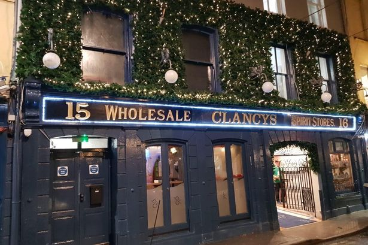

This was my first job and it was a great place to start because I was required to learn a diverse set of skills within a demanding industry.
Skills I aquired
Working to defined and strict standard operating procedures
Delivering high standard of customer care to Apple Employees
Recording of food and refrigeration temperatures
Delivering individual customer care and preferences
Working under pressure during key busy times
Working with peers and superiors in a friendly and effective manner
Apple European Headquaters
2016 - 2019
I was hired as a Barista and contracted into The Apple European Headquarters. Working as a barista has helped improve the skill’s I learned in my previous job and has taught me how to interact with customers on a more personal level.
Skills I aquired
Acquiring and developing Barista skills
Beverage service including draft, bottled and wine
Experience operating hot and cold food Deli counter
Till operation and Cash handling
Food service at weddings, functions and banqueting events
Developing customer service skills

Clancys Cork
2019 - Present
I began working at Clancys part-time to help fund myself through college. I was hired as a Bartender/Barista and would work either evenings or morning, depending on where I would be needed that week.
Skills I aquired
Improved Bartending skills
Beverage service
Food service at partys, such as brthdays or staff parties